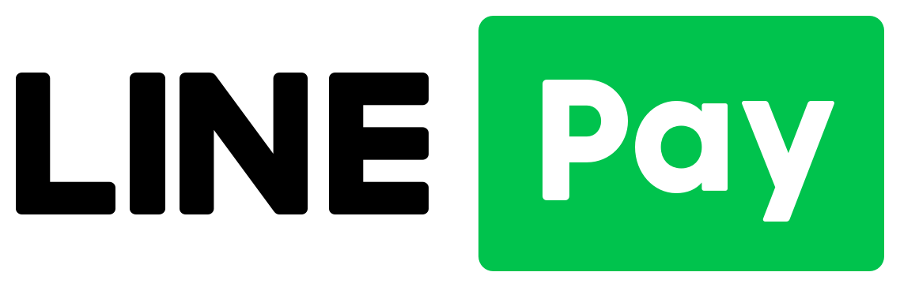

Cash note top-up
Accepts 100, 500 and 1,000 NTD notes for quick, simple top-ups.
CLOUD TOP-UP / MOBILE WALLET
Mobile Wallet
Cash top-up and QR Code scanning, quick and convenient
Accepts 100, 500 and 1,000 NTD notes. Customers scan a QR Code with their phone to log in as a member and top up; credit arrives instantly, so the wash is not interrupted.

01 / OVERVIEW
The cloud top-up kiosk lets drivers top up with cash or a phone and use the self-service wash equipment through a member account.
Accepts 100, 500 and 1,000 NTD notes for quick, simple top-ups.
Scan a QR Code to log in as a member and top up from your phone.
Credit arrives as soon as the top-up is complete, so the wash is not interrupted.
Accepts cash notes and mobile payment (LINE Pay, JKOPAY, PX Pay Plus).
02 / FUNCTIONS
LINE Pay, JKOPAY, PX Pay Plus

03 / MACHINE
04 / TRUST
Smart top-up · Touch-free experience · Easier car washing
05 / OPTIONS
Optional; ask us for details.
06 / SITE SURVEY
We plan top-up and payment configuration around your site and existing equipment. Book a free on-site survey with our team.
Contact ShinoX for equipment enquiries in Taiwan and overseas.
shinox.car.washer@gmail.com ↗Email enquiries open your mail application. Please review and send the message there.